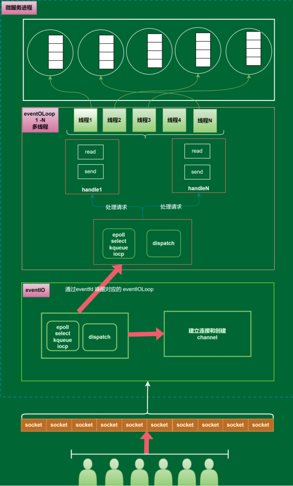

网络层

通过多reactor +多线程 + 协程池方式，实现win,linux,mac 3方跨平台的底层通讯,能轻松万级别QPS起步，应对高并发请求量大，IO密集型和CPU密集型业务都能处理
进程
-
win
-
linux
-
mac
lua调试
插件能对微服务lua代码进行调试
视频效果展示
多虚拟机测试
linux测试
真机测试
日志监控
利用Ubuntu20.04+mysql8.0+zabbix6.0+elk+filebeat+logstash+grafan 搭建的游戏日志监控系统 能快速的收集 查询 追踪 定位 报警问题
git hook
利用git_pre_commit git_pre_reveive 对提交的消息进行代码规范化检查,commit msg提交检查,lua语法检查,Excel检查
自动化check,格式化,编译,部署,通知
利用gitlab cicd 能对上传以后的代码进行 check,格式化,编译,部署,通知
-
自动化
check,格式化,编译,部署 -
群通知
-
个人通知
在线exel协同开发
属性自动更新
lua的工程化强化 Teal
Teal 和 Lua 的关系就类似 TypeScript 和 JavaScript 的关系，支持给已有的库进行类型标记，最终是翻译为 Lua 去实际使用的。
类型标记可以写在 xx.d.tl 文件中，比如
local record os exit: function(number) end return os
在 Teal 中主要新增了 record、array 和 map 类型，更多的语言特性可以见文档 https://github.com/teal-language/tl/blob/master/docs/tutorial.md
代码样例
-- record 类似其他语言中的结构体 local record arg_t
github地址在下边
teal-language/tl: The compiler for Teal, a typed dialect of Lua (github.com)
叫青语言，
安装颇费了一番功夫,主要是我对环境不熟悉
需要luarocks，
需要mingw（安装gcc），注意是mingw不是mingw-w64,这tm是完全不同的两个项目
然后有什么用呢
来看一段正常的lua代码
//正常lua代码
local function add(a, b)
return a + b
end
local s = add(1, 2)
print(s)
这代码执行肯定返回3
//bug lua代码
local function add(a, b)
return a + b
end
local s = add("ni", 2)
print(s)
然后来一段bug代码，这个bug代码 你用luac 肯定是没问题，等到执行期才会出问题，因为lua设计为一门动态语言，而且这从vm层次就决定了，这个情况有点像js，因为动态化，错误检查时机被拖到了运行时，不运行，无法发现问题（人眼除外）
软件工程的实践中，代码静态检查能发现太多的问题（静态类型编程语言），js因为微软的typescript得到了极大的工程化加强。
青语言就是对lua的类型化加强，和ts之于js是一样的概念。
//青语言bug代码
local function add(a: number, b: number): number
return a + b
end
local s = add("a1",2)
print(s)
然后使用青语言，加上类型标注，标注的形式也像极了typescript
然后就可以 tl check来检查这个青语言代码的问题了
不用执行就可以提前知道第五行有个bug，这就是静态类型的功能所在。
通过tl gen 指令 可以将青语言代码编译为lua，这个思路也是和ts=>js一致的。
他的工程化优势参考ts带来的js革命性生态进化就可以想象一二。
热更新
在代码复用和组织数据方面，面向对象可能是大家第一反应。面向对象三大特性继承，封装，多态，在一定程度上能解决不少代码复用，数据复用的问题。不过面向对象不是万能的，它也有极大的缺陷：
数据结构耦合性极强
一旦父类中增加或删除某个字段，可能要影响到所有子类，影响到所有子类相关的逻辑。这显得非常不灵活，在一套复杂的继承体系中，往父类中改变字段会变得越来越麻烦，比方说ABC是D的子类，某天发现需要增加一个AB都有的数据，但是C没有，那么这个数据肯定不好放到父类中，只能将AB抽象出来一个父类E，E继承于D，AB共有的字段加到E中，一旦继承结构发生了变化，可能接口也要改变，比方说之前有个接口传入参数类型是E，当AB不再需要共用的那个字段，那么需要调整继承关系，让AB重新继承D，那么这个接口的传入参数类型需要改成D，其中的逻辑代码很可能也要发生调整。更可怕的是游戏逻辑变化非常复杂，非常频繁，可能今天加了个字段，明天又删掉了，假如每次都要去调整继承结构，这简直就是噩梦。继承结构面对频繁的数据结构调整感觉很无力
难以热插拔
继承结构无法运行时增加删除字段，比如玩家Player平常是走路，使用坐骑后就骑马。问题是坐骑的相关信息就需要一直挂在Player对象上面。这就显得很不灵活，我不骑马的时候内存中为啥要有马的数据？接口也有同样的问题，一个类实现了一个接口，那么这个接口就永远粘在了这个类身上，你想甩掉她都不行，还是以骑马为例，玩家Player可以进行骑行，那么可能继承一个骑行的接口，问题是，当我这个Player从坐骑上下来时，玩家Player身上还是有骑行的接口，根本没法动态删掉这个接口！可能例子举得不是很对，但是道理表述的应该很清楚了
使用面向对象可能导致灾难性后果，游戏开发中有新人有老人，有技术好的，有技术差的。人都是喜欢偷懒的，当你发现调整继承关系麻烦的时候，有可能AB中增加一个字段为了省事直接就放到父类D中去了。导致C莫名奇妙的多了一个无用的字段。关键还没法发现，最后导致父类D越来越大，到最后有可能干脆就不用ABC了，直接让所有对象都变成D，方便嘛！是的，很多游戏就是这么干的，开发到最后根本就不管继承关系了，因为想管也管不了了。
面向对象在面对复杂的游戏逻辑时很无力，所以很多游戏开发者又倒退了回去，使用面向过程进行开发游戏，面向过程，简单粗暴，不考虑复杂的继承，不考虑抽象，不考虑多态，是开发届的freestyle，挽起袖子就开撸，但同时，代码逻辑的复用性，数据的复用性也大大降低。面向过程也不是一种好的游戏开发模式。
组件模式很好的解决了面向对象以及面向过程的种种缺陷，在游戏客户端中使用非常广泛，Unity3d，虚幻4，等等都使用了组件模式。组件模式的特点：
1.高度模块化，一个组件就是一份数据加一段逻辑
2.组件可热插拔，需要就加上，不需要就删除
3.类型之间依赖极少，任何类型增加或删除组件不会影响到其它类型。
但是目前只有极少有服务端使用了组件的设计，守望先锋服务端应该是使用了组件的设计，守望先锋的开发人员称之为ECS架构，其实就是组件模式的一个变种，E就是Entity，C就是Component，S是System，其实就是将组件Component的逻辑与数据剥离，逻辑部分叫System